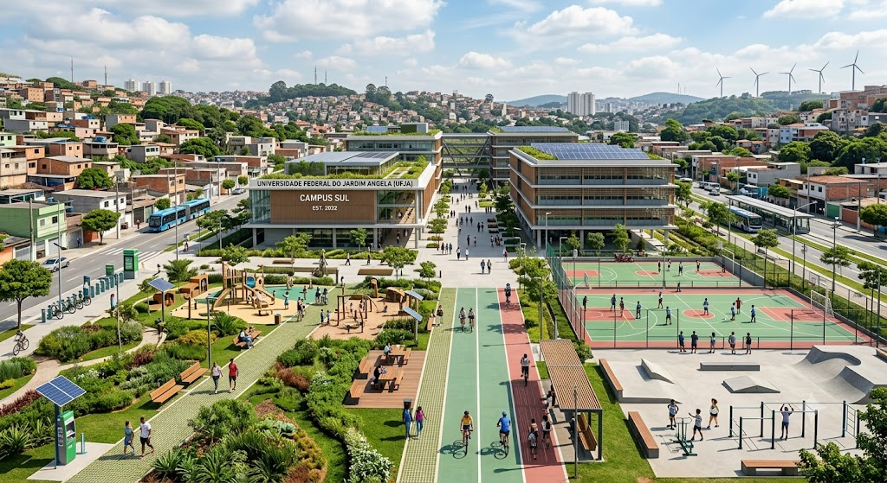

Jardim Angela
Como é hoje: Atualmente, é um lugar com a taxa de criminalidade muito alta, não possui lugares culturais, não tem muitos parques, possui poucas áreas de lazer, poucas escolas de qualidade, não possui UMA universidade.
Como imagino em 2035: Em 2035 espero que, tenha lugares culturais para visistação, parques, mais áreas de lazer, escolas de qualidade e que tenha ao menos UMA universidade disponível para as pessoas que moram no Jardim angela ou adjacências. Além disso, que a taxa de criminalidade diminua.

Ver no Google Maps
Estr. M'Boi Mirim
Como é hoje: A Estr. do M'Boi Mirim, hoje é um "inferno". No horário de pico das 16H00 até às 20hH30, horário que as pessoas estão voltando do trabalho, escola, faculdade, etc. Nesse horário, eu gasto uma hora e meia até a minha casa, sendo que fora desse horário normalmente leva 40 minutos até minha casa. As pessoas que moram nessa região, espera a anos o corredor de ônibus e a duplicação, mas ficamos somente nas promessas dos políticos.
Como imagino em 2035: Em 2035 espero que, finalmente esteja tudo duplicado e com o corredor de ônibus. somente com essas duas coisas irá melhorar muito a qualidade de vida das pessoas que dependem da ESTR. M' Boi Mirim. Além disso, espero que, coloquem ciclo faixas e melhorem a arborização.

Ver no Google Maps